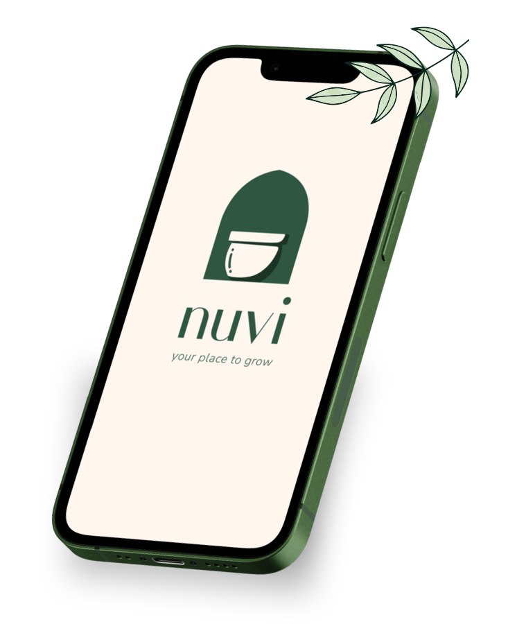
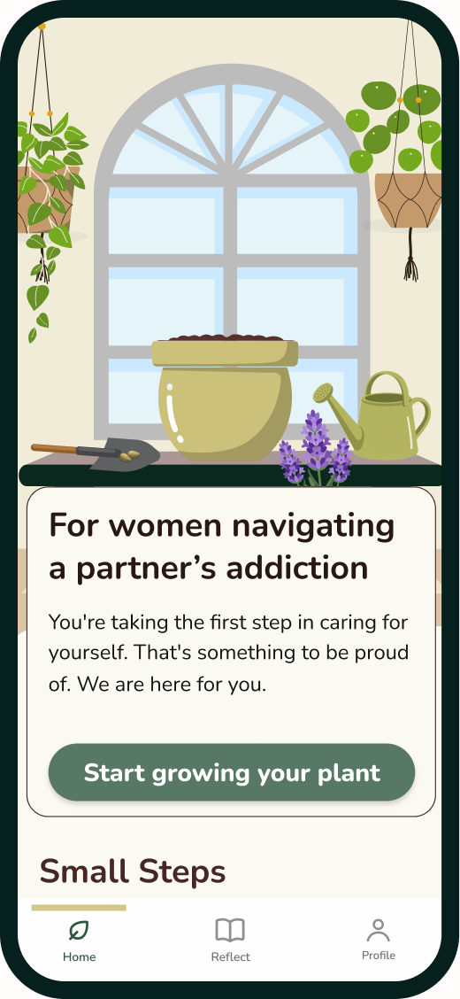
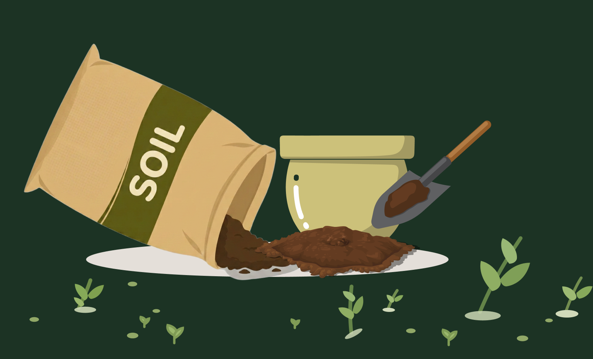
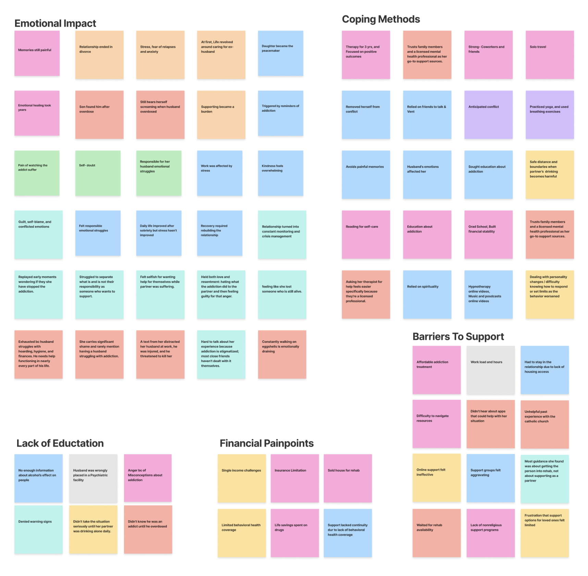
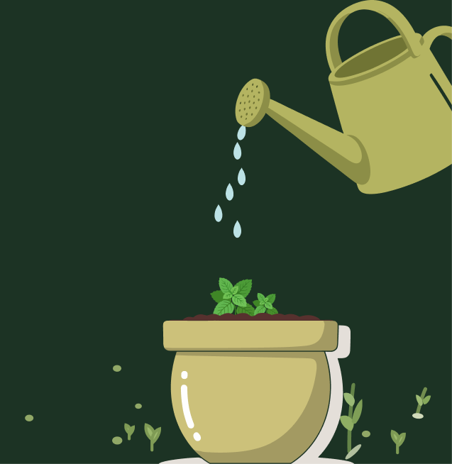
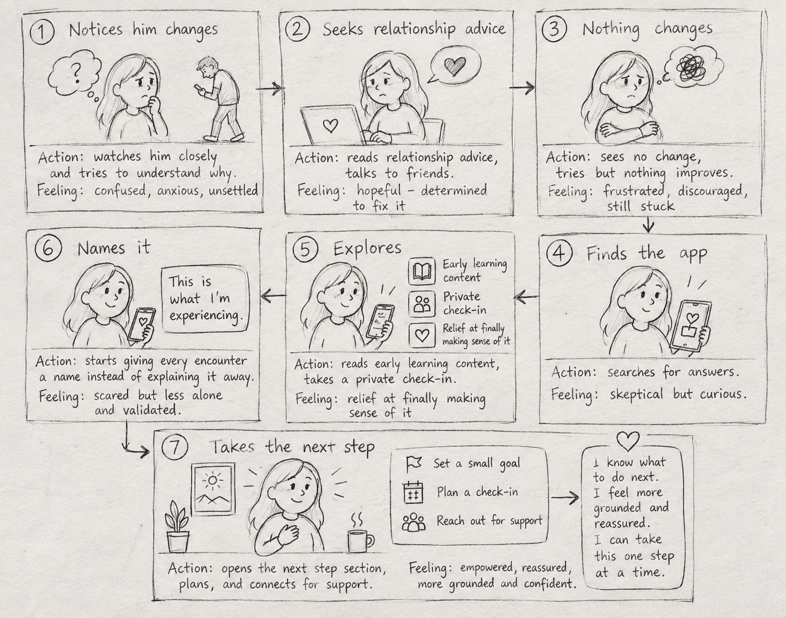
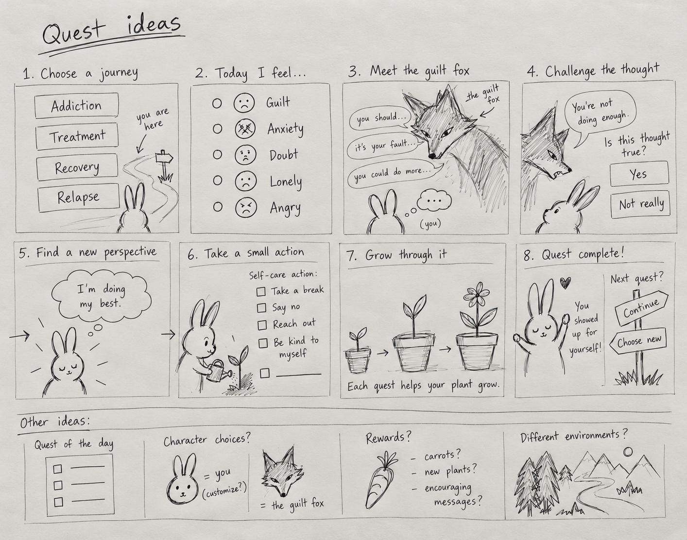
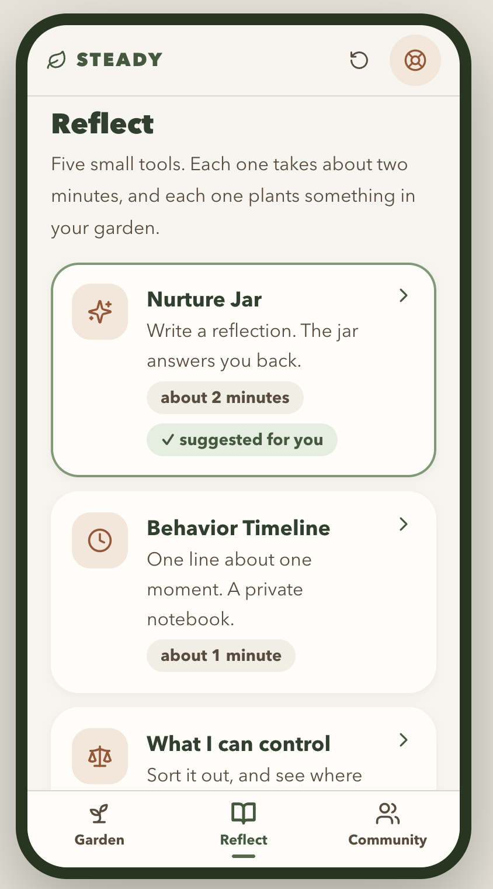
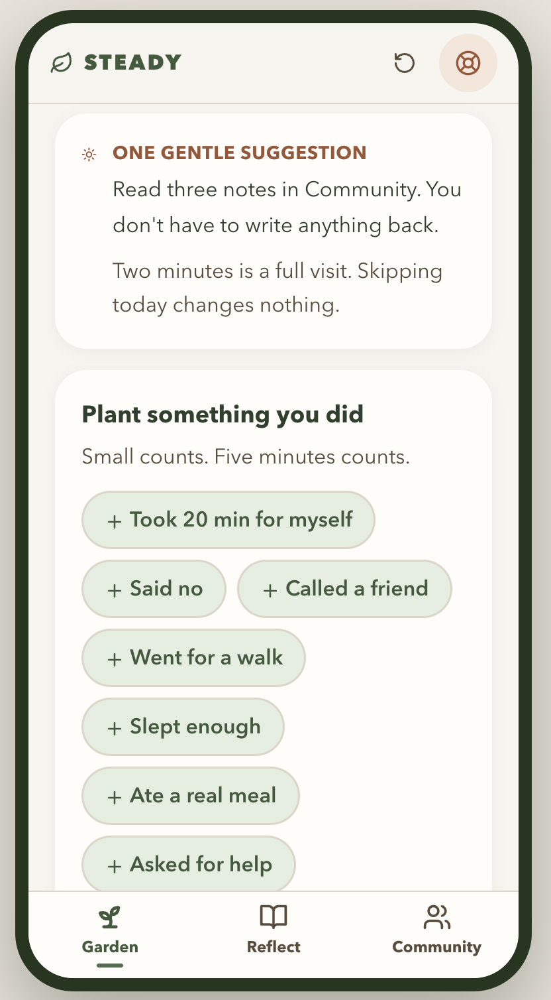

Emotional Stress Extends Beyond Active Use
6/8
Women
Experienced ongoing emotional strain
“Even two years into his sobriety, I still feel anxious about going home.” — Lina
Bringing Addiction’s
Hidden Impact
Into Focus

We started with a broader question:
How might we support people affected by someone else’s addiction?
Nuvi is a secular self-care companion for women navigating a partner's addiction, turning small, private acts of care into visible growth: a plant you grow alongside your own recovery, one small step at a time.


Harsimran Kaur
Team Lead
Nada Hashem
Research Lead
Cherilin Kepke
Interaction Lead
Sebastian Ochoa
UI Lead
With thanks to coach Becca Woo and the bridgegood staff for their guidance throughout this project
We started broad, exploring existing support before speaking with people to understand their experiences and uncover what was missing.
Our first assumption was that most support focused on the person with addiction. But reviewing 14 direct and indirect competitors challenged that assumption: support for loved ones already existed. The real gap was partner-specific support, which was limited and often faith-based.
To better understand our audience, I looked at Al-Anon, a support network for people affected by a loved one’s substance use.
49%
Attended Al-Anon
because of a romantic relationship
87%
Of respondents
identified as women
I led interviews with people affected by a loved one’s addiction, alongside therapists and social workers, to understand their experiences and needs.
12
People with
lived experience
8
Therapists &
social workers
As I synthesized all 12 lived-experience interviews, a clear pattern emerged: 8 were women affected by a partner’s addiction.
Together with our competitive audit and Al-Anon research, this led us to center their experiences, while saving the other 4 interviews for future exploration.
Insights from 8 therapists and social workers helped deepen the themes that shaped Nuvi.

With our focus narrowed, we looked deeper at what these women shared. Across their stories, four themes kept resurfacing.
6/8
Women
Experienced ongoing emotional strain
“Even two years into his sobriety, I still feel anxious about going home.” — Lina
5/8
Women
Left without support that held up
“I attended a few support meetings, but stopped because it was too aggravating.” — Carmen
7/8
Women
Doubted their memory, role, and perception
“You start to question yourself, what you did wrong and what you missed.” — Mayan
4/8
Women
Described strain affecting work and finances
“Without a better job, I couldn’t get better benefits. Insurance covered only three sessions.” — Annie
Across the Themes, One Need Kept Surfacing: Emotional Impact
As our focus narrowed, so did our question
How might we help women navigate the emotional toll of a partner’s addiction?

We translated each insight into a decision that shaped Nuvi.
DESIGN DECISION
We turned support into repeatable quests that grow their plant, encouraging users to return and focus on their well-being over time.
DESIGN DECISION
We made Nuvi secular and self-guided for women supporting a partner, without group sharing or faith-based framing.
DESIGN DECISION
We created “Things I Can Control” and “Reframe” to clarify what users can control and reduce self-doubt.
DESIGN DECISION
We made Nuvi free and on-demand, with no streaks or pressure, so users can engage when they have the time and capacity.
Some people didn't initially recognize addiction as the problem, thinking the changes were about their partner's personality or the relationship itself.
Educational resources already existed, and people may not seek addiction-focused support before naming the problem.
Recognition brought anxiety, self-doubt, and overwhelm, while partner-specific support was limited and often faith-based.
Nuvi focuses on that emotional impact.


Our team had different views on whether gamification fit such a sensitive experience, so we tested the assumption.
I reviewed research on gamification and surveyed women from our target audience. 75% preferred a more serious-looking experience.
Plant growth became a subtle reward for progress without making the experience feel like a game.
No streaks or pressure, just visible growth worth returning for.
Using our ideas and direction, we used Claude to quickly prototype two experiences: self-care in a garden and reflection practices like Things I Can Control and Reframe.
The two lacked a meaningful connection, with the garden separate from the reflection experience.
Each practice now moves one guided journey forward and helps the user's plant grow.
One journey, where reflection and self-care work together.


Support doesn't need to be complex to be powerful.
When someone's already emotionally drained, support has to be easy to reach, not one more thing to manage.
Nuvi is built, tested, shipped, and waiting for its first partner.
Thank you for taking the time to explore Nuvi.